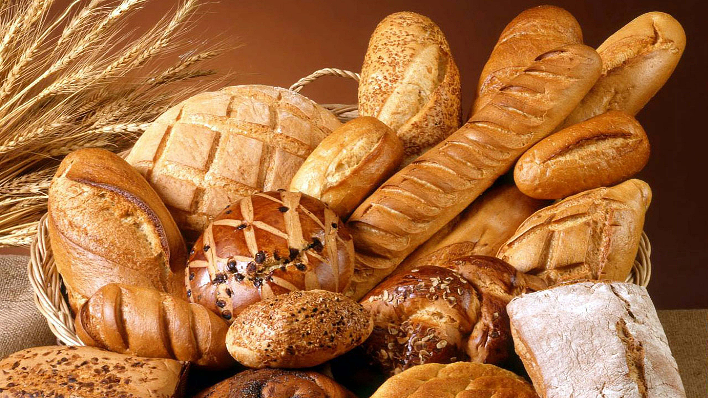

Welcome to Big Sis Bakes
Baking should feel possible!
Big Sis Bakes is here to help you navigate the world of baking with easy recipes and helpful tips.
Whether you are a beginner or looking to improve your skills, Big Sis Bakes has something for you.

Featured Content
Beginner Tips
Learn about basic baking tools, ingredients, and simple ways to prepare before starting.
Easy Recipes
Find simple recipes with directions that are easier for new bakers to understand.
Food Swaps
Explore possible ingredient replacements and learn when different swaps may work best.